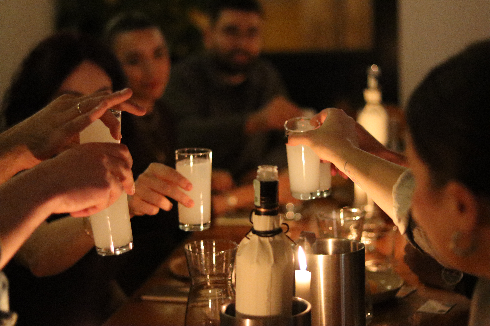
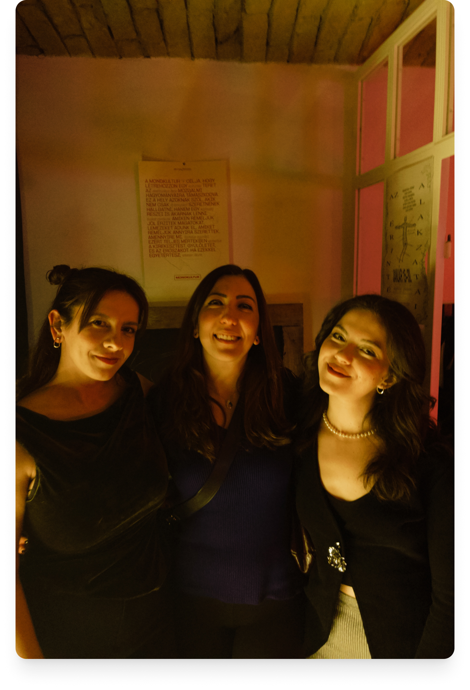
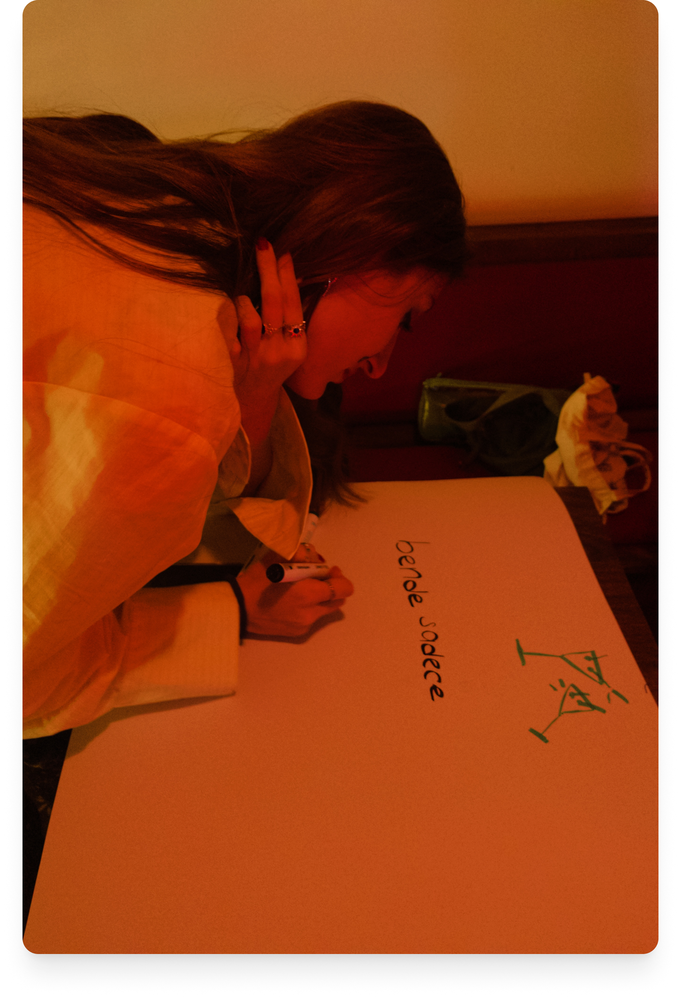

Designing identity for community.
Zeytin Collective is a community-driven cultural initiative in Budapest, founded by three women including myself to bring people together through shared experiences, cultural exchange, and creative events.
Bold type, earthy colours, a playful spirit.
Inspired by Mediterranean warmth and the feeling of coming together, Zeytin's visual language combines bold condensed typography with an earthy palette — designed to feel welcoming, expressive, and a little unconventional.


From countdown stories to event night.
Each event gets its own visual character while remaining unmistakably Zeytin — the brand system is flexible enough to evolve without losing coherence.


Extending the brand into physical space.
Zeytin curated "Somewhere Between" at Charbon Art Café, Budapest. I developed the full visual communication — posters, artist cards, and exhibition materials — giving the show its own distinct aesthetic while keeping it recognizably Zeytin.

More than events, it's about the people who make them.




This project taught me that the visual identity is only one layer. The design signals who Zeytin is for, what kind of space it creates, and how people relate to it — before anyone walks through the door.